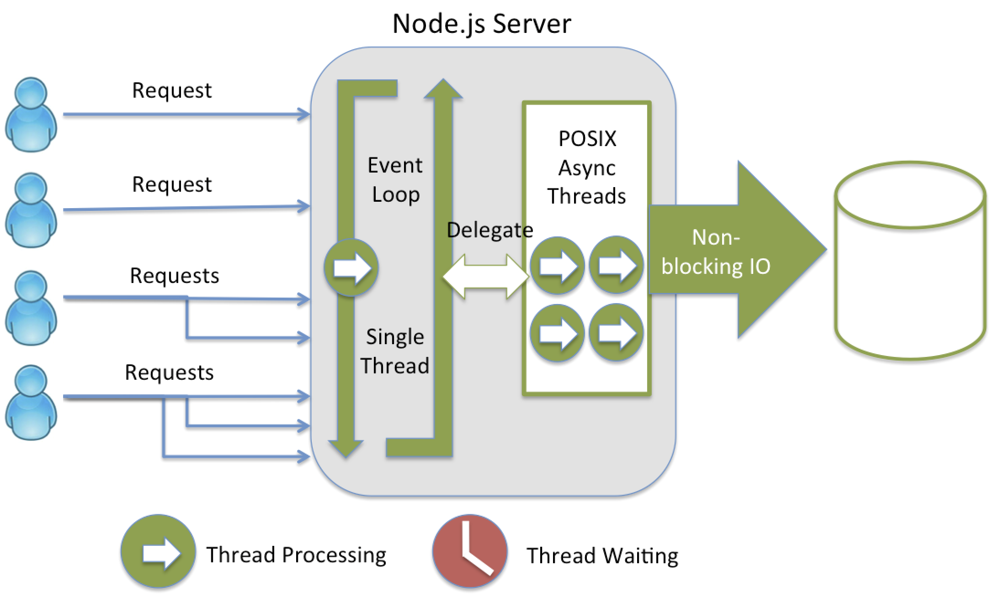

New RF
Scalable, resiliant and distributed architecture for RF Device integration with Synapse WMS.
Developed by CL Application Development Team
Accessibility
Select the theme that suit your environment:
Solarized (default) -
Black -
White -
League -
Sky
Beige -
Simple
Serif -
Blood -
Night -
Moon
Current Architecture
Architecture (Proposed)

Sub System Topology (Proposed)
Future Technology Stack
Why Node.JS?
Node.Js Architecture
Node.Js Internals
Node.js Frameworks and Libraries.
- Blessed - A high-level terminal interface library.
- node-telnet2 - Telnet Server Implementation.
Middle Teir - Frameworks and Libraries.
- .NET Core - Cross platform framework for server apps.
- ASP.NET Core - Cross platform library for Restful Services.
Why these frameworks & libs?
- Cloud Friendly - especially Microsoft Azure
- Maximization of OHL & local talent pool.
- Test driven development friendly.
Plan and Approach
- Technology Prototype - {Complete}
- Analysis - Current application. {Ongoing. 4 use cases completed.}
- Design, Development & Testing- {Started application framework.}
Implementation Approach - Data Access
- New Schema
- All DB Objects will stay under this schema.
- Stored procedures, Prepared Statements etc.
Implementation Approach - Data Access
- Reuse vs Recreate
- It depends. Not 100% nor 50-50
- Evaluate by each RF option
- Will recreate 100% logic in pro*C files and modules
- Most of zrf.* packages will be reused.